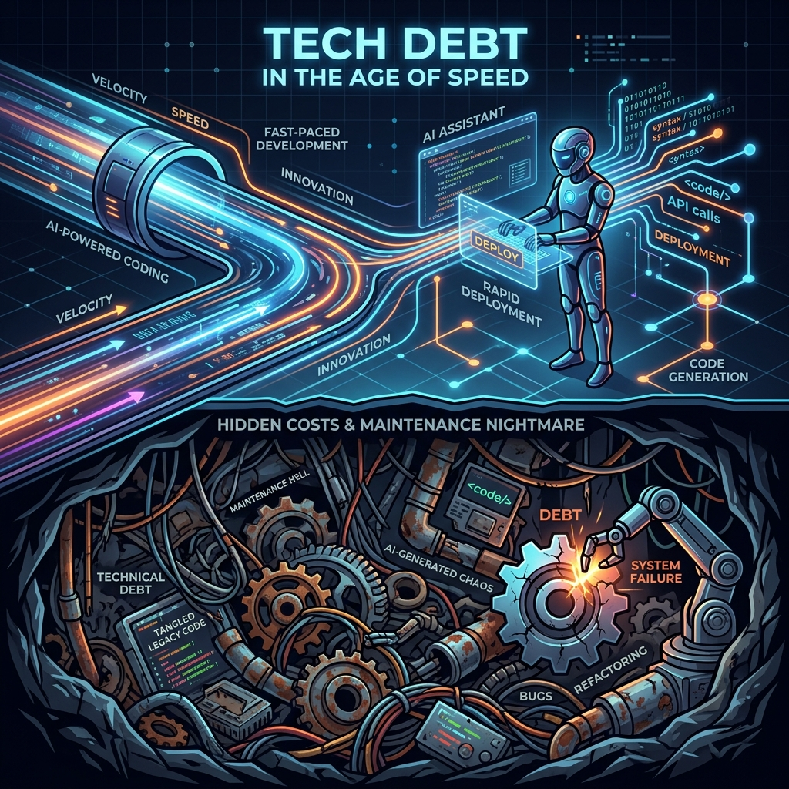

Tech Debt in the Age of Speed: We are building faster, but are we building better?
In a world where AI coding assistants can generate boilerplate in seconds, speed does not always equate to quality.

The challenge is not just to keep up with velocity, but to ensure code remains sustainable.
What if the fastest code you write today turns into a maintenance nightmare tomorrow? In a world where AI coding assistants can generate boilerplate in seconds, the temptation to push the button is stronger than ever. Yet the article Tech Debt in the Age of AI: Faster to Write, Harder to Own reminds us that speed does not equate to quality. The real cost shows up when a quick fix becomes a tangled web of duplicated logic, brittle tests, and unclear documentation. 🚀 The challenge is not just to keep up with the velocity of feature delivery but to ensure that each line of code remains sustainable. As teams lean on AI to scaffold solutions, the line between productive automation and unchecked technical debt blurs. The question becomes: how do we harness the power of these tools without surrendering ownership of the codebase? The answer lies in a disciplined mindset that treats every shortcut as an investment that may pay back in debugging hours, onboarding friction, and lost revenue. 🧩
The Hidden Cost of Speed
Technical debt is the future cost of short‑term gains made during development. It manifests as code duplication, convoluted logic, and a lack of automated tests. When AI tools produce code that satisfies a feature requirement but ignores best practices, the debt grows invisible until it slows delivery or breaks in production. 🤖 Developers often feel pressure to ship fast, but the hidden price of that speed is a codebase that is harder to read, harder to test, and harder to evolve. Recognizing the signs of debt early—such as repetitive patterns, inconsistent naming, or a growing suite of flaky tests—is the first step toward reclaiming control. 💡
Proactive Strategies for Managing Debt
Managing tech debt requires a clear definition and a proactive strategy. Start by documenting what constitutes debt in your organization: whether it’s duplicated functions, legacy APIs, or missing unit coverage. Integrate testing into every stage of the pipeline, so that code generated by AI is automatically vetted for correctness and style. Use automated linters and static analysis tools to catch violations before they merge. Treat refactoring as a core part of the development cycle, not an afterthought. When an AI‑generated snippet is accepted, pair it with a review that ensures it aligns with architectural standards. This continuous feedback loop turns potential debt into an opportunity for improvement. 🛠️
Building Faster and Better
The future of software development hinges on balancing speed with responsibility. AI can accelerate the drafting of code, but the judgment to evaluate its long‑term impact remains ours. By defining debt, embedding quality checks, and automating the removal of bugs, teams can enjoy the benefits of rapid iteration without paying a steep price later. The goal is to build faster and better—so that the next sprint isn’t just a sprint, but a sustainable, scalable foundation. How do you balance speed and quality in your projects?